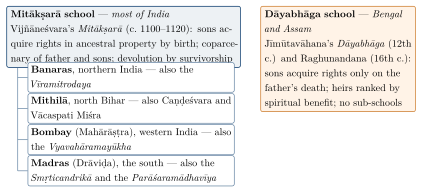

Chapter 11: Yājñavalkya, Nārada and the Schools of Hindu Law¶
After the Manusmṛti, the most consequential Dharmaśāstra texts were a shorter and more systematic smṛti attributed to Yājñavalkya; the Nāradasmṛti, the first smṛti devoted wholly to law; the lost treatises of Bṛhaspati and Kātyāyana, which survive in quotations; and two medieval works that gave rise to the “schools” of Hindu law recognised by the British courts: the Mitākṣarā of Vijñāneśvara and the Dāyabhāga of Jīmūtavāhana. This chapter introduces these texts, their authors and dates, and the doctrines for which they are best known. Their contributions to procedure, evidence and substantive law are taken up in more detail in Chapters 12–15.
11.1 The Yājñavalkyasmṛti¶
11.1.1 Frame, Date and Structure¶
The Yājñavalkyasmṛti is attributed to Yājñavalkya, the great teacher of the Bṛhadāraṇyaka Upaniṣad. In its opening verses the sages approach “the lord of yogis” Yājñavalkya, who is in Mithilā, and ask him to teach them the dharmas of the varṇas, the āśramas and the others; he answers by naming the fourteen sciences that are the foundations of knowledge and dharma and the twenty authors of dharmaśāstras (1.1–5; Chapter 9). The attribution is a claim to authority, not a statement of authorship. The text draws extensively on the Manusmṛti and on the Arthaśāstra tradition; it uses technical legal vocabulary more developed than Manu’s; and it was known to authors of the later Gupta period. Patrick Olivelle, whose edition and translation appeared in 2019, places it around the fourth or early fifth century CE; the series uses the range c. 4th–5th century CE (Olivelle 2019).
The text has just over a thousand verses, arranged in three books: ācāra, “conduct” (368 verses in the vulgate), covering the saṃskāras, the student and householder, food, purity, gifts, ancestral offerings, the propitiation of planets and the king; vyavahāra, “legal procedure” (307 verses), covering the courts and the titles of law; and prāyaścitta, “penance” (335 verses), covering impurity, the duties of ascetics and expiation. This threefold arrangement became the standard division of the subject matter of Dharmaśāstra.
11.1.2 Character¶
Compared with Manu, Yājñavalkya is concise and orderly. Its legal book treats procedure first — the court, the plaint, the answer, the means of proof — and then each title of law in turn, with an attention to documents that reflects the growing use of written instruments in commercial life. It names the means of proof as documents, possession and witnesses, with ordeals to be used only when these are lacking (2.22). It recognises the jurisdiction of guilds, merchant associations, assemblies of villages and families alongside the king’s court, and lays down a hierarchy among them (2.30; Chapter 12). It states that where two smṛtis conflict, reasoning based on legal practice should decide, and that dharmaśāstra prevails over arthaśāstra (2.21).
It would be wrong to suppose that Yājñavalkya softened the hierarchy of varṇa. Its rules on witnesses, interest, marriage and punishment, like Manu’s, are graded by varṇa; it prescribes that a Śūdra who abuses a twice-born man be punished severely; and it shares the general Dharmaśāstric picture of women’s dependence. Its importance lies rather in its technical clarity, which made it the natural basis for later commentators.
11.1.3 The Three Books in Outline¶
The first book, on conduct, begins with the sources of dharma, the fourteen sciences and the twenty authors of dharmaśāstras, and then sets out the saṃskāras, the duties of the student, the rules of marriage, the varṇas and mixed classes, the householder’s daily rites, the rules for a snātaka, food, purification, gifts, ancestral offerings and the rites to propitiate the planets. It closes with a long section on the king: his qualities, ministers, chaplain, taxes, forts, foreign policy and the administration of justice — a compressed version of the Arthaśāstra’s teaching.
The second book, on legal procedure, is the core of the text for the history of law. It describes the court and the judge; the plaint, the answer, proof and decision; the means of proof (documents, possession, witnesses and ordeals); and then each title of law, from debts and deposits to partition, boundary disputes, assault, theft, violence, sexual offences, gambling and miscellaneous matters. Its treatment of documents and of ordeals is much fuller than Manu’s, and its arrangement of the titles became the model for later works.
The third book, on penance, covers impurity after birth and death, the duties of the forest-dweller and the renouncer, a summary of the doctrine of the self and rebirth, and the penances for the various sins. Its combination of practical law with ritual and soteriology shows that, for Yājñavalkya as for Manu, law remained one part of dharma rather than a separate discipline.
11.1.4 Commentaries¶
The Yājñavalkyasmṛti attracted several important commentaries. The earliest surviving is the Bālakrīḍā of Viśvarūpa (9th century, probably in the south). The Mitākṣarā of Vijñāneśvara (c. 1100–1120) became the most influential legal text of medieval and colonial India. Aparārka, a twelfth-century Śilāhāra king of the north Konkan, wrote a voluminous commentary that is a mine of quotations; Śūlapāṇi wrote a commentary in Bengal in the fifteenth century (Kane 1930; Derrett 1973).
11.2 The Nāradasmṛti¶
11.2.1 The First Juridical Smṛti¶
The Nāradasmṛti, attributed to the divine sage Nārada, is unique among the major smṛtis in dealing only with law. It contains no rules on ritual, purity, the stages of life or penance; it is a treatise on vyavahāra. Its date is uncertain; it is later than Manu and Yājñavalkya, and is generally placed in the fifth or sixth century CE. It survives in a shorter and a longer recension, and an early commentary by Asahāya is known; Richard Lariviere’s critical edition and translation (1989) is the standard version (Lariviere 1989b). Julius Jolly had translated the text in the Sacred Books of the East in 1889 (Jolly 1889).
The text opens with a long introduction on procedure (the mātṛkā, “matrix”), discussing the nature of lawsuits, the court, the plaint and answer, the means of proof and the qualities of the judge. It then treats the eighteen titles of law in an order and with names somewhat different from Manu’s, adding a title on “miscellaneous” matters (prakīrṇaka), which includes offences against the king’s commands, and an appendix on theft.
11.2.2 Distinctive Doctrines¶
Several features of the Nāradasmṛti have attracted attention.
-
Procedure. Nārada’s account of the four parts of a lawsuit — plaint, answer, proof and decision — and of the kinds of answer and proof is the most developed among the smṛtis that survive complete (Chapter 12).
-
Capacity. Nārada sets out who may validly transact: transactions by those who are not independent (minors, sons under their father’s authority, slaves) or by the intoxicated, the insane, the afflicted and those acting under fear or compulsion are invalid. Later commentators drew on this in their law of contract (Chapter 13).
-
Remarriage. Nārada allows a woman to take another husband in five calamities: when her husband is missing, dead, has become an ascetic, is impotent or has fallen from caste (naṣṭe mṛte pravrajite klībe ca patite patau / pañcasv āpatsu nārīṇāṃ patir anyo vidhīyate, Nārada 12.97). The same verse appears in the Parāśarasmṛti. It is the clearest classical text permitting remarriage, and it was cited by Īśvaracandra Vidyāsāgar in the nineteenth-century campaign for widow remarriage (Chapter 15), though medieval commentators generally held that it did not apply in the Kali age.
-
Royal authority. Nārada gives the king’s command great weight. It adopts the Arthaśāstra’s four “feet” or bases of decision, with royal edict at their head (Chapter 12); and in its final title it insists that the king must be honoured and obeyed by his subjects even if he lacks good qualities.
Lariviere has argued that the Nāradasmṛti reflects actual legal practice more closely than the earlier smṛtis, and that it represents a stage at which law had become a specialised field within Dharmaśāstra (Lariviere 1989b, 1989a).
11.3 Bṛhaspati and Kātyāyana¶
Two further law books, attributed to Bṛhaspati and Kātyāyana, are lost as independent texts but survive in hundreds of verses quoted by the commentators and digests. Both are generally placed in the sixth or seventh century CE. Their quotations were collected into reconstructed texts: Bṛhaspati by K. V. Rangaswami Aiyangar (1941), Kātyāyana by P. V. Kane (1933); Jolly translated the Bṛhaspati fragments then known in 1889 (Jolly 1889).
They represent the most developed stage of the smṛti law of procedure and evidence. Kātyāyana, in particular, deals at length with the plaint and answer, with documents and their authentication, with possession and with the burden of proof. Bṛhaspati is credited with a well-known warning that a decision should not be made by relying on the letter of the śāstra alone, for when a case is decided without reasoning, dharma is lost. Both treat custom as authoritative in many matters. The digests quote them constantly, and much of what later writers called “Hindu law” on procedure and evidence derives from these fragments (Kane 1930).
11.4 Other Smṛtis¶
Many other smṛtis circulated, most of them short and many late. The Viṣṇusmṛti (or Vaiṣṇava Dharmaśāstra), a Vaiṣṇava reworking of an older dharmasūtra presented as the teaching of Viṣṇu to the Earth, contains a substantial section on the king and the law. The Parāśarasmṛti, which claims to be the dharmaśāstra for the Kali age, is concerned mainly with conduct and penance; its importance owes much to the fourteenth-century commentary-digest of Mādhava at Vijayanagara. Works attributed to Atri, Dakṣa, Devala, Hārīta, Śaṅkha and Likhita, Saṃvarta and others are known in full or in fragments; some of them, such as Devala’s rules on readmitting people forcibly converted, reflect the circumstances of particular periods. Kane’s History remains the guide to this large and uneven literature (Kane 1930).
11.5 The Mitākṣarā¶
11.5.1 Vijñāneśvara¶
Vijñāneśvara composed the Mitākṣarā (“concise words”) at the court of the Western Cālukya king Vikramāditya VI (r. 1076–1126) at Kalyāṇa (modern Basavakalyan, Karnataka), probably between about 1100 and 1120. Despite its title, the work is a large commentary on the whole Yājñavalkyasmṛti, which it uses as a framework for a systematic exposition of Dharmaśāstra, citing a wide range of smṛtis and earlier commentators and applying Mīmāṃsā reasoning to reconcile them. Its section on inheritance became the most important single source of “Hindu law” in British India, and through the British courts it governed the family property of most Hindus outside Bengal and Assam until 1956, and in part until 2005 (Derrett 1968; Lingat 1973).
11.5.2 Ownership by Birth¶
The Mitākṣarā’s most famous doctrine is that a son acquires ownership of ancestral property by birth (janmanā svatvam). Its starting point is a verse of Yājñavalkya: “In land acquired by the grandfather, in a corrody or in movable property, father and son have equal ownership” (Yājñ 2.121 in the vulgate numbering). Vijñāneśvara argued that ownership (svatva) is a worldly matter, known from ordinary experience and usage rather than solely from scripture, and that the texts treating sons as owners show that ownership in ancestral property arises at birth, not at the father’s death. From this followed the institution that British lawyers called the Mitākṣarā coparcenary: the father and his sons, grandsons and great-grandsons in the male line hold ancestral property jointly, with rights that arise at birth; a son may demand partition even during his father’s lifetime; and the father’s power to alienate ancestral property is restricted. A widely quoted text allowed a single member to alienate immovable property only in times of distress, for the needs of the family, or for pious purposes. On a member’s death his interest passed to the surviving coparceners by survivorship rather than to his own heirs (Derrett 1968; Rocher 2012).
11.5.3 Inheritance by Consanguinity¶
For property not held jointly — the separate property of a man who died without male issue — the Mitākṣarā established an order of heirs based on nearness of blood. It read the relationship of sapiṇḍas as one of blood rather than of shared ancestral offerings (Section 11.10), and ranked heirs accordingly. Following Yājñavalkya 2.135–136, the widow, then the daughters, the daughter’s son, the parents, the brothers and their sons and so on inherit the estate of a sonless man who had separated from his coparceners. The widow thus inherited only in limited circumstances, and as a rule a woman took a limited estate, which passed on her death not to her own heirs but to the next heirs of her husband (Chapter 15).
11.6 The Dāyabhāga¶
11.6.1 Jīmūtavāhana¶
The Dāyabhāga (“partition of inheritance”) of Jīmūtavāhana, a Bengali jurist probably of the twelfth century, is not a commentary but an independent treatise on inheritance, partition, women’s property and related matters. It became the leading authority on these subjects in Bengal, together with the later works of Raghunandana (16th century), and the British courts applied it there and in Assam. Ludo Rocher’s annotated translation (2002) has replaced Colebrooke’s translation of 1810 as the standard version (Rocher 2002; Colebrooke 1810).
11.6.2 Ownership on Death¶
Jīmūtavāhana rejected the doctrine of ownership by birth. Sons, he argued, acquire ownership of their father’s property only when the father’s ownership ceases — through death, through becoming an ascetic or through loss of caste. During his lifetime the father is the owner of both ancestral and self-acquired property and can dispose of it; there is no coparcenary of father and sons in the Mitākṣarā sense. After the father’s death the brothers may hold the property jointly, but each holds a definite share, which on his death passes to his own heirs rather than by survivorship to the others.
Jīmūtavāhana also formulated a principle that later lawyers called factum valet (“the deed stands”): even if a father acts against the precepts of the texts in disposing of property — for instance, by giving away ancestral land without his sons’ consent — the transaction is valid, though the father may incur sin, because “a fact cannot be altered by a hundred texts”. The principle distinguishes between moral injunction and legal effect, and it was much used by British courts.
11.6.3 Inheritance by Spiritual Benefit¶
The Dāyabhāga’s order of heirs rests on the capacity to confer spiritual benefit on the deceased through the offering of rice-balls (piṇḍa) in the ancestral rites: those who offer, or whose offerings benefit, the deceased and his ancestors inherit in order of the benefit they confer. On this principle, the widow of a man who died without a son inherited his whole estate even if he had been living jointly with his brothers — a significant difference from the Mitākṣarā, which allowed her to inherit only if he had separated. Some historians have connected the Bengal rule with the relatively high incidence of widow-burning (satī) recorded in Bengal in the early nineteenth century, on the hypothesis that relatives had an interest in removing a widow who had inherited property; the connection has been suggested but not demonstrated. Table 11.1 summarises the main differences between the two schools.
| Question | Mitākṣarā | Dāyabhāga |
|---|---|---|
| When does a son acquire rights in ancestral property? | At birth | On the father’s death (or renunciation, or loss of caste) |
| Father’s power to alienate ancestral property | Restricted | Full |
| Joint family property | Coparcenary of father and male descendants; devolution by survivorship | Joint holding of brothers after the father’s death, each with a definite share passing to his heirs |
| Basis of the order of heirs | Consanguinity | Spiritual benefit (piṇḍa offerings) |
| Widow of a sonless man | Inherits only if her husband had separated | Inherits even if her husband was joint |
| Region (British India) | Most of India | Bengal and Assam |
11.7 Partition and the Joint Family in Practice¶
The commentators devoted much attention to partition (vibhāga), the division of family property among its members. Under the Mitākṣarā, partition could take place during the father’s lifetime, at his wish or, in certain circumstances, at the demand of a son; after the father’s death the brothers could partition whenever they chose. Property acquired by a member through his own efforts, without the use of family funds, was his separate property and not divisible; so were gifts of affection and certain gains of learning — a doctrine that occupied later lawyers greatly when educated men began to earn salaries in professions. The question became acute in the colonial period, when courts had to decide whether the earnings of a member of a joint family who had been educated at the family’s expense belonged to him or to the family; the Hindu Gains of Learning Act of 1930 settled it in favour of the individual. The Mitākṣarā required that, before division, provision be made for the debts of the family, for the marriage of unmarried daughters and for the maintenance of dependants. Under the Dāyabhāga, partition among brothers after the father’s death followed similar rules, but each brother’s share was his own from the start.
Medieval documents and colonial records show that joint families were common among landholding and commercial castes, but that partition was also frequent, and that the size and composition of households varied widely by region and caste. The model of the large, stable joint family living under a patriarch was in part an ideal of the texts and of the colonial courts; the reality was more fluid (Derrett 1968; Newbigin 2013).
11.8 Women’s Property in the Commentaries¶
The commentators’ treatment of women’s property shows how much interpretation mattered. Vijñāneśvara read Yājñavalkya’s definition of strīdhana broadly enough to include property a woman inherited; Jīmūtavāhana confined it to property over which she had independent power of disposal. The British courts preferred the narrower view for inherited property and so created the “woman’s limited estate” that the Hindu Succession Act abolished in 1956. The texts and the litigation are discussed in Chapter 15.
11.9 Daughters as Heirs¶
The rights of daughters illustrate the differences between the schools. Both recognised daughters as heirs of a man who left no son, widow or son’s son, but with restrictions. Under the Mitākṣarā as applied by the courts, unmarried daughters took precedence over married ones, and among married daughters those who were poor over those who were well off. Under the Dāyabhāga, a daughter could inherit only if she had a son or might bear one, since the basis of inheritance was the capacity to benefit the deceased through the offerings of a male descendant; a widowed daughter without sons, or a daughter who was barren, was excluded. In both schools a daughter, like a widow, took a limited estate that passed on her death to the next heirs of her father. These rules, which put daughters far behind sons, were among the main targets of the reformers whose work culminated in the Hindu Succession Act of 1956 and its amendment in 2005.
11.10 Sapiṇḍa Relationship¶
The commentators also differed on the meaning of a term central to both inheritance and marriage: sapiṇḍa. In the older texts, sapiṇḍas are those connected by the ancestral offering of rice-balls (piṇḍa): a man offers piṇḍas to his father, grandfather and great-grandfather, and those who share in such offerings are sapiṇḍas of one another. Vijñāneśvara reinterpreted the term in the Mitākṣarā to mean those connected by particles of the same body, that is, by blood, through either parent. Jīmūtavāhana retained the older sense based on offerings, which was the foundation of his theory of inheritance by spiritual benefit (see above). The difference had practical effects: the Mitākṣarā’s definition made the circle of sapiṇḍas wider, including relatives through the mother, and the two schools consequently ordered the heirs differently.
In marriage, sapiṇḍa relationship defined the prohibited degrees. Yājñavalkya forbids marriage with a girl within the fifth degree on the mother’s side and the seventh on the father’s (Yājñ 1.53), and similar rules appear in other smṛtis. These rules were in tension with the customs of much of southern India, where marriage with the daughter of one’s mother’s brother was common and often preferred. Baudhāyana already notes this southern custom among the practices peculiar to particular regions (BDh 1.2.1–4), and later authorities debated whether it could be accepted as a regional custom or was to be condemned; most southern commentators accepted it (Kane 1930; Trautmann 1981). The Hindu Marriage Act of 1955 adopted a shorter definition of sapiṇḍa relationship — three generations in the line of ascent through the mother and five through the father — and prohibited marriages within it and within listed degrees of relationship, unless a custom governing both parties permits such a marriage. The saving clause for custom preserved the legality of cross-cousin marriage in the south, and is a modern statutory form of the old śāstric recognition of regional usage.
11.11 The “Schools” of Hindu Law¶
Medieval jurists did not belong to “schools” in any formal sense; they wrote within regional traditions of learning in which some authorities were more respected than others — the works that local paṇḍits consulted most readily. The British courts, needing to decide which texts to apply, systematised these preferences into a map of schools with defined territories, so that the law of inheritance came to depend on where a family was domiciled (Chapter 19). The Dāyabhāga school governed Bengal and Assam; the Mitākṣarā school the rest of India, divided into sub-schools according to the supplementary authorities preferred in each region (Figure 11.1):

-
the Banaras school, in much of northern India, relying on the Mitākṣarā and on the Vīramitrodaya of Mitra Miśra;
-
the Mithilā school, in north Bihar, relying also on the digests of Caṇḍeśvara and Vācaspati Miśra;
-
the Bombay (Mahārāṣṭra) school, relying also on Nīlakaṇṭha’s Vyavahāramayūkha (17th century), which the Bombay courts sometimes followed in preference to the Mitākṣarā where the two differed — for example, in allowing sisters to inherit in certain cases;
-
the Madras (Drāviḍa) school, relying also on the Smṛticandrikā of Devaṇṇabhaṭṭa (c. 1200), Mādhava’s Parāśaramādhavīya (14th century, Vijayanagara) and other southern works.
Within each area, the courts also recognised proven customs that departed from the texts — among them the matrilineal systems of Kerala and the customs of many agricultural communities of Punjab (Chapter 16). J. D. M. Derrett and Ludo Rocher emphasised how much this system of schools was a product of colonial jurisprudence, which turned flexible scholarly traditions into territorially defined bodies of law (Derrett 1968; Rocher 2012; Kane 1930).
11.12 The Smṛtis in the Reform Debates¶
In the nineteenth century the smṛtis became weapons in public debates about social reform. Because the colonial courts treated the śāstras as law, reformers and their opponents argued about what the texts actually required. Rammohun Roy argued from Manu that satī was not enjoined, and the orthodox Dharma Sabha of Calcutta, founded in 1830, replied with texts of its own in petitioning against the Bengal Sati Regulation. Īśvaracandra Vidyāsāgar’s two tracts on widow remarriage (1855) built their case on the Parāśarasmṛti’s claim to be the law for the Kali age and on its verse permitting remarriage in five calamities; his opponents answered with the Manusmṛti and the medieval lists of practices forbidden in the Kali age (Chapter 9). In the debate over the Age of Consent Bill (1891), Bal Gangadhar Tilak opposed the legislation, not least as an intrusion by a foreign government into Hindu religious life, while reformers cited texts and medical evidence in its support. The campaigns themselves are described in Chapter 15.
These debates made the interpretation of the smṛtis a matter of public, and often bitter, controversy among educated Indians, and they confirmed the colonial state’s practice of legislating on Hindu personal law only when it could claim support from within the tradition — a pattern that recurred in the debates over the Hindu Code after independence (Chapter 20).
11.13 From Commentary to Statute¶
The Mitākṣarā and Dāyabhāga remained the basis of Hindu family property law until independence. The Hindu Succession Act of 1956 replaced the textual law of succession with a statutory scheme, giving daughters and widows rights of inheritance and abolishing the widow’s limited estate; but section 6 of the Act preserved the Mitākṣarā coparcenary, with survivorship among male coparceners, subject to a notional partition when a coparcener left female heirs. The Hindu Succession (Amendment) Act of 2005 made daughters coparceners by birth in their own right, with the same rights and liabilities as sons. In Vineeta Sharma v. Rakesh Sharma (2020) the Supreme Court held that a daughter’s right under the amended section arises by birth and does not depend on her father having been alive in 2005 (Chapter 20). The doctrine of ownership by birth that Vijñāneśvara constructed for sons in the twelfth century has thus been extended by Parliament and the courts to daughters — a striking example of the way modern Indian law has transformed rather than simply abolished its classical inheritance.
11.14 Summary¶
-
The Yājñavalkyasmṛti (c. 4th–5th century CE) arranged Dharmaśāstra in three books — conduct, legal procedure and penance — and gave the law of procedure and documents a clearer form than Manu.
-
The Nāradasmṛti (c. 5th–6th century) is the first smṛti devoted entirely to law; it develops procedure, defines capacity to transact, gives great weight to the king’s command, and permits a woman to remarry in five calamities.
-
Vijñāneśvara’s Mitākṣarā (c. 1100–1120) held that sons acquire ownership of ancestral property by birth; Jīmūtavāhana’s Dāyabhāga (12th century) held that they acquire it only on the father’s death, and based inheritance on spiritual benefit. The colonial courts turned their regional authority into territorial “schools”.
Further Reading¶
Olivelle (2019) translates the Yājñavalkyasmṛti; Lariviere (1989b) edits and translates the Nāradasmṛti; Jolly (1889) translates Nārada and the Bṛhaspati fragments. Rocher (2002) translates the Dāyabhāga with a full introduction, and Colebrooke (1810) the inheritance sections of both schools. On the schools and their colonial transformation see Derrett (1968), Lingat (1973) and Rocher (2012); on the texts in general, Kane (1930).